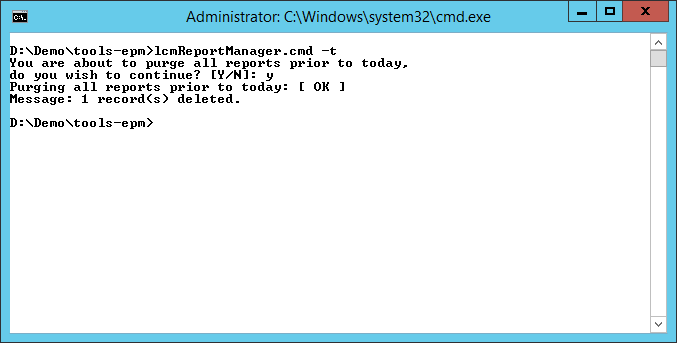
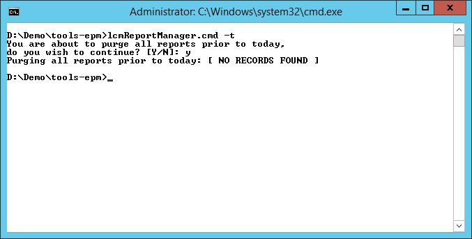

Purges all LCM migration reports from the migration status overview in Shared Services prior to the day executed.
D:\> lcmReportManager.cmd|sh -t

In case there are no reports found to delete, [ NO RECORDS FOUND ] message will appear as shown below.

Created with the Personal Edition of HelpNDoc: Easy Qt Help documentation editor